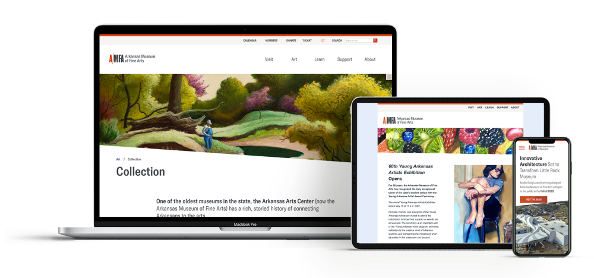
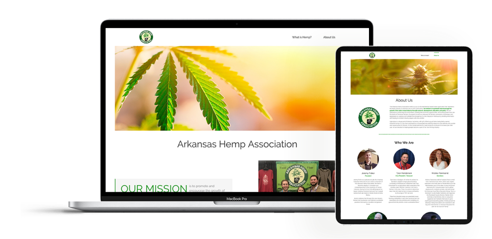

Arkansas Museum of Fine Arts (Arkansas Arts Center)
2020 - 2021
Design: Mobile-first responsive website, email campaigns, page layout for member-exclusive magazine
Tech: Figma, Adobe Creative Suite, InVision, HTML, CSS, WordPress
Work Experience:
- Managed launch of the organization's brand new website from the ground up, featuring the organization's first fully responsive design, an integrated searchable and sortable calendar of event listings, and robust SEO.
- Designed and implemented 50+ user-friendly page layouts to date using HTML and CSS to build and customize modules in a WordPress environment.
- Design email marketing campaigns, track week-over-week analytics to measure impact and reach.
- Design page layouts for member-exclusive quarterly print publication, Works.
- Strategic partner with leadership team to advise and plan for the future growth, functionality, and design of AMFA’s online presence through the website, mobile app, and email.
Metova, Inc.

2017 - 2020
Design: Retrowave-style company t-shirt, onboarding mobile app, icon pack for fleet management company, mobile-first responsive websites, Android apps for mobile devices and in-car equipment
Tech: Sketch, Figma, Adobe Creative Suite, Zeplin, InVision, HTML, CSS, WordPress, .NET, Android, Kotlin, XML, Java, SQL, Git
Work Experience:
- Developed process for design team to increase communication and accountability between all stakeholders and project teams from kickoff to delivery.
- Designed mobile app to gamify onboarding process for new hires.
- Designed responsive website for heavy machinery fleet management tracking and scheduling.
Client Industries: Healthcare and Telehealth, Heavy Equiptment Fleet Management, Connected Vehicle Navigation and Entertainment, Internet of Things
Tasha for Greenburgh Campaign

2020 - 2021
Design: Style guide, campaign website, ActBlue page, social media event graphics
Tech: Figma, Adobe Creative Suite, HTML, CSS, SquareSpace
Work Experience:
- Collaborated with the candidate, campaign staff, and other key stakeholders and volunteers to design for this mayoral campaign in upstate New York.
- Designed yard signs, letterhead, and event flyers for all social media platform.
- Developed style guide to share with fellow volunteers.
- Designed and built the ActBlue donations page and SquareSpace site for the campaign.
Indivisible - Little Rock & Central Arkansas

2020 - present
Design: Direct mail postcards
Tech: Figma, Adobe Creative Suite
Work Experience:
- Designed direct mail postcards sent to 10,000 voters, with the goal of highlighting their state lawmaker's voting record in the most recent legislative session.
- Collaborated with local and national stakeholders to determine which districts to engage
- Performed A/B testing to determine the most effective design.
Arkansas Hemp Association
2019
Design: Using the client's existing logo to create the brand identity, I created this web presence from scratch. I pulled colors from the logo to use throughout the site, repeated the circular motif, and found crisp, bright images to reflect the dawn of a new era in agriculture.
Tech: WordPress, CSS, HTML
Goal: To serve as a resource for advocates, growers, processers, and businesses to network and share knowledge, as well as to educate the public about this newly-legalized crop. This website is now defunct, check out select screenshots of page layouts on Figma.
Personal Projects
Election Graphics
2020
Design: Galvanized by the upcoming 2020 election, I created this series of graphics as an outlet for my anxiety and an exploration of creating graphics within the Biden campaign's style guide. I explored typography and illustration, and utilized the campaign's color palette and type guide, in these pieces inspired by a tweet by @jackantonoff (left), a frequent refrain on "Pod Save America" (center), and a candidate illustration (right).
Résumé
2018 - Present
Tech: HTML, CSS
Design: Originally built this as a PDF document, I focused on clean lines, clear separation, and a pop of one of my favorite colors. Although my most recent resume does not follow this format, it remains my favorites for it's strong columns and clear presentation of my skills and experience.
Goal: To recreate my favorite résumé as a responsive, mobile first, accessible website while learning BEM and SMACSS and applying knowledge of CSS flexbox
Paris
2018
Design: This small website is built to be very image-driven in order to encourage the user to explore the site and the city.
Goal: To build a fun little guide to the City of Lights, focusing on accessibility and responsiveness.